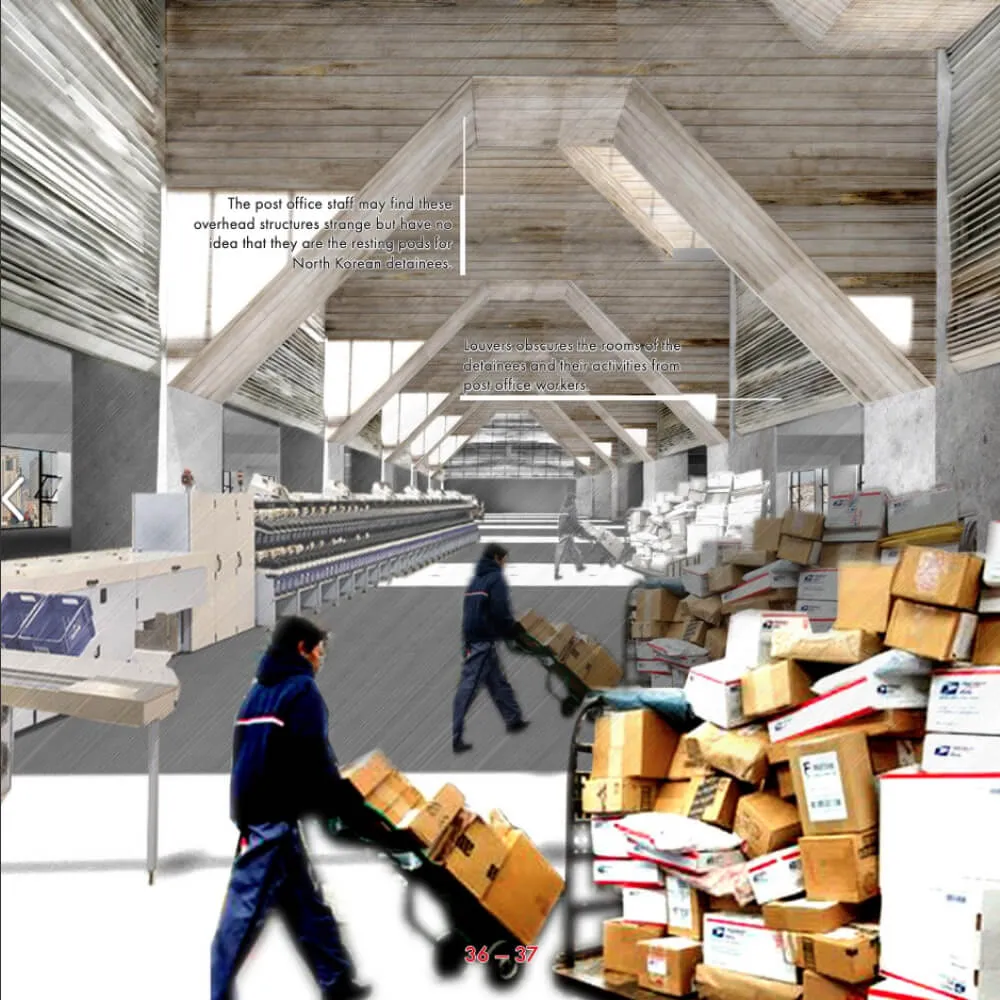
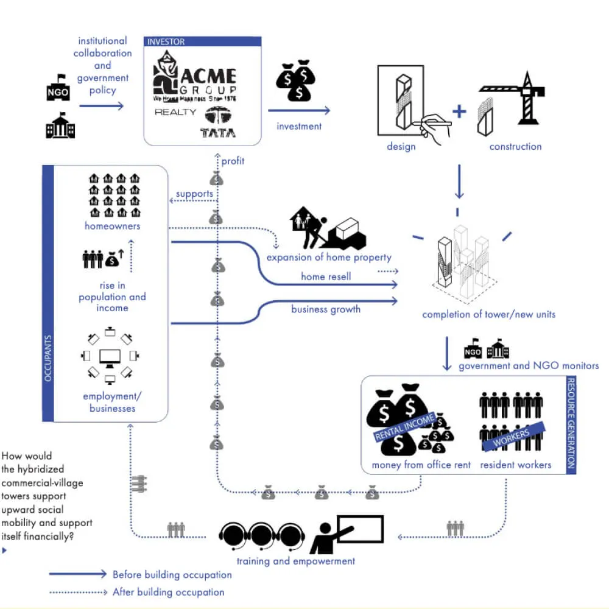
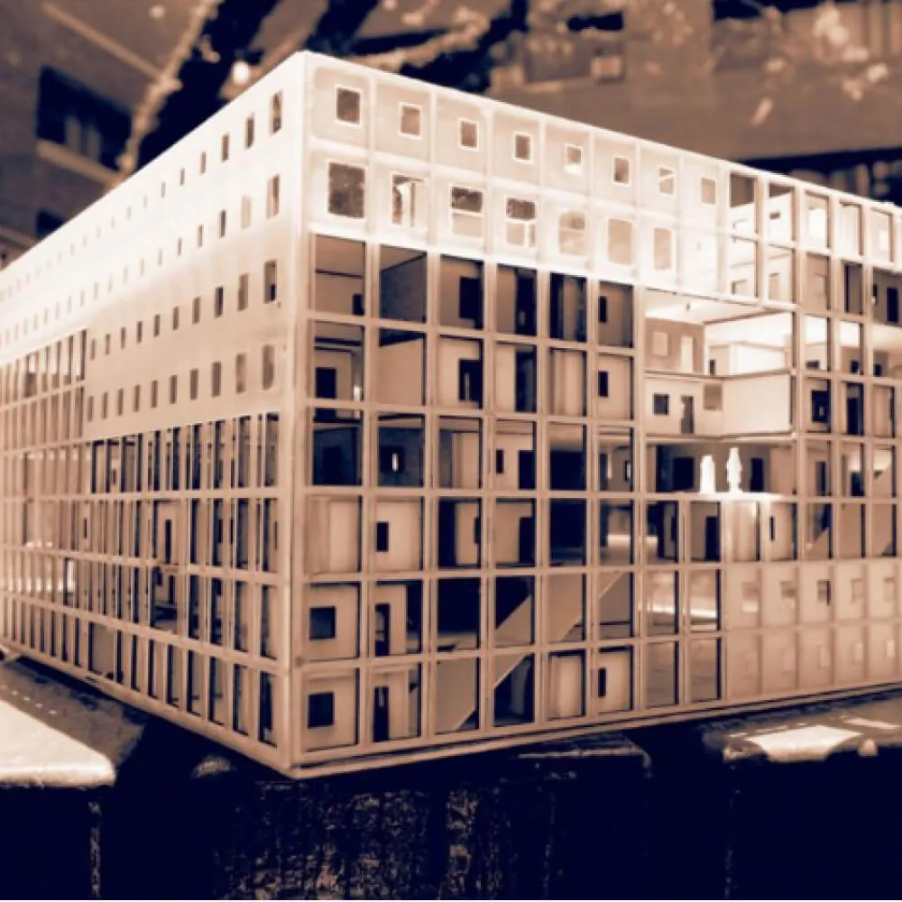
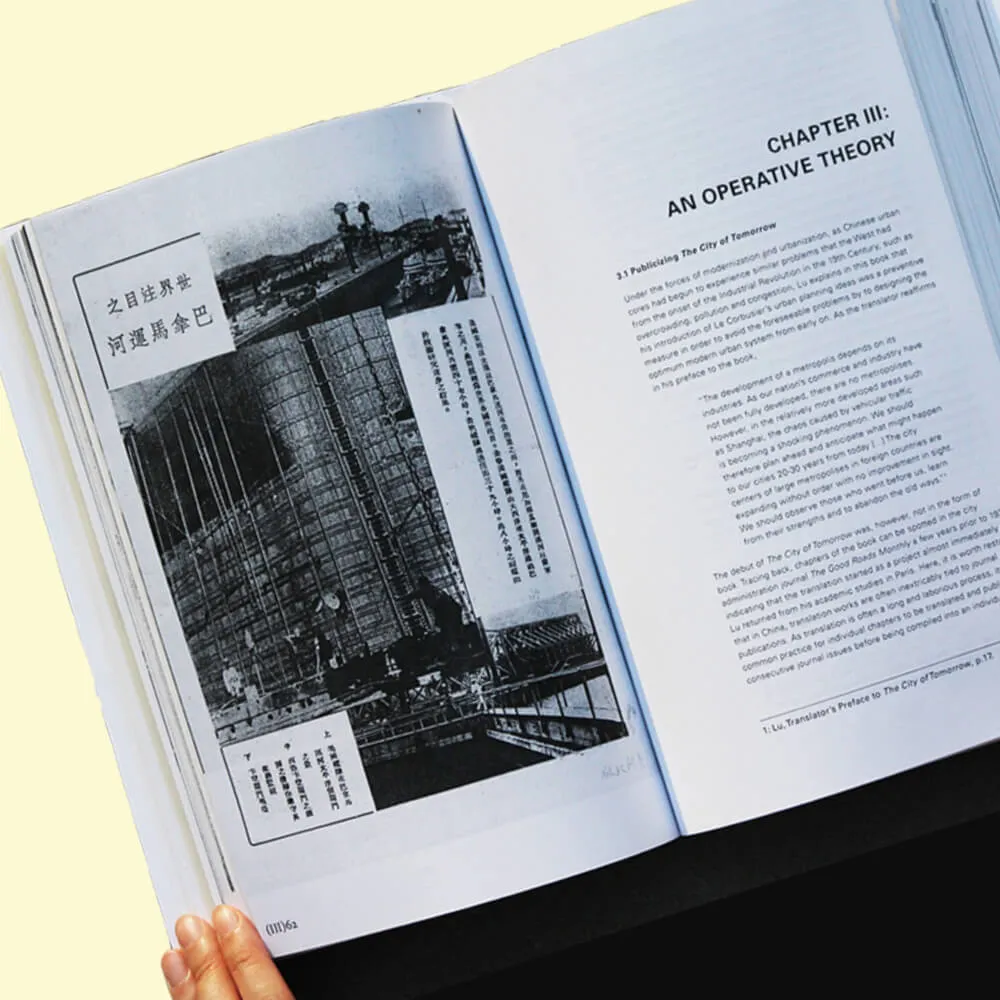
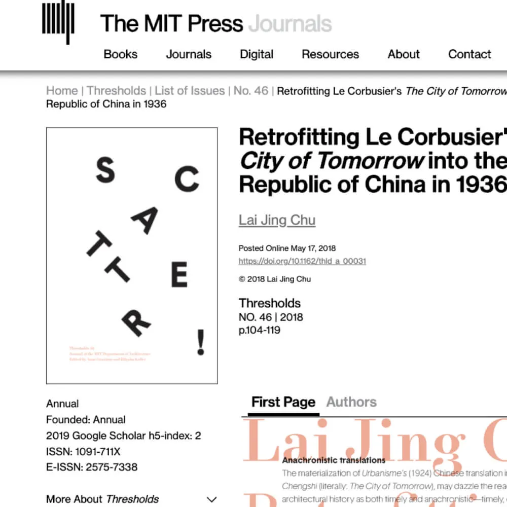
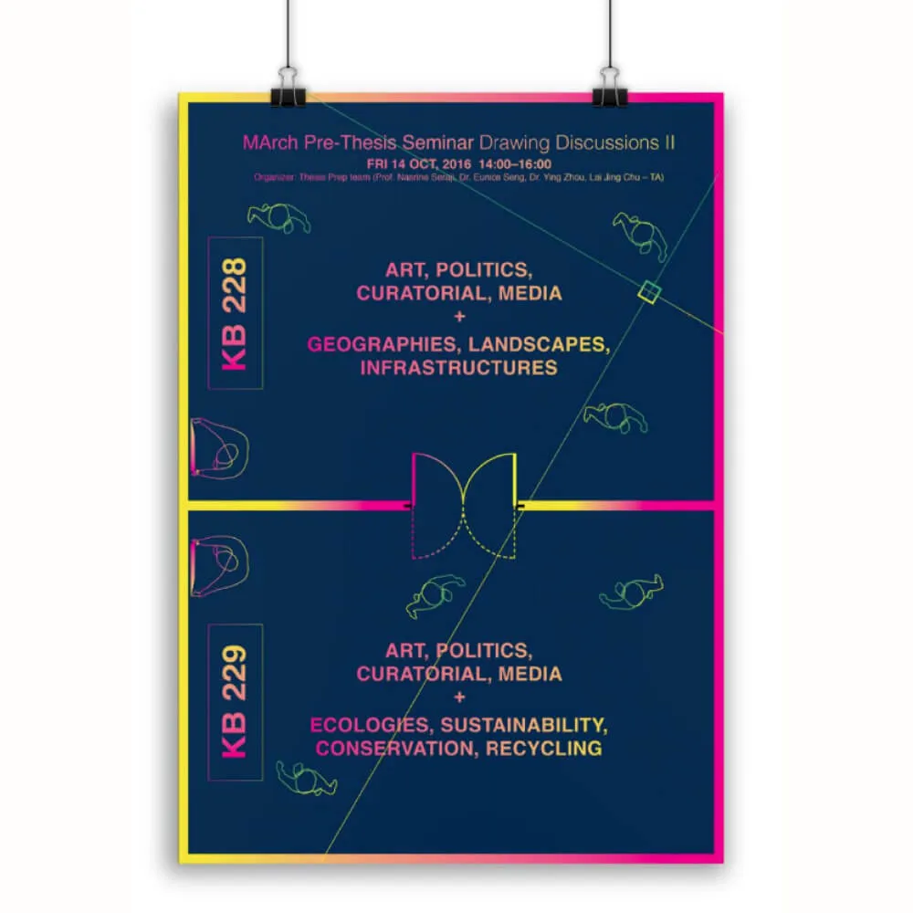
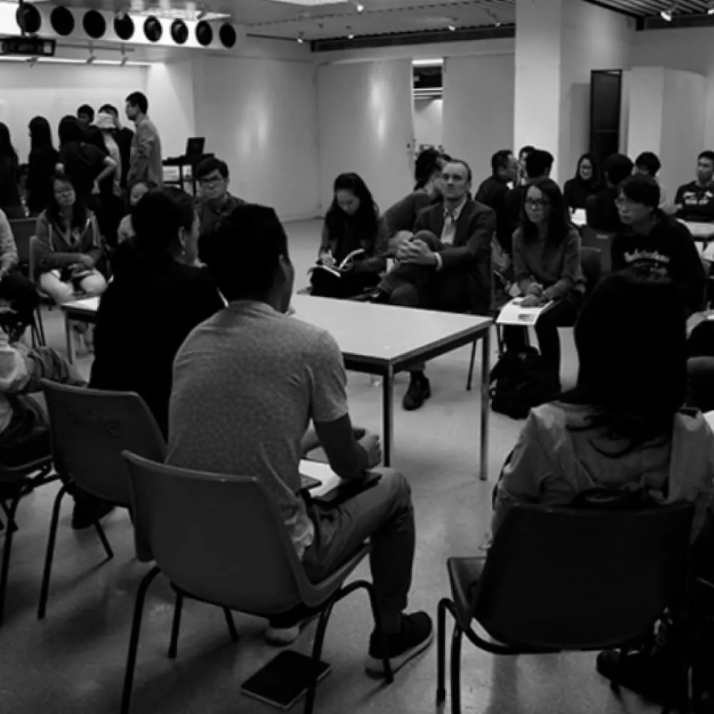
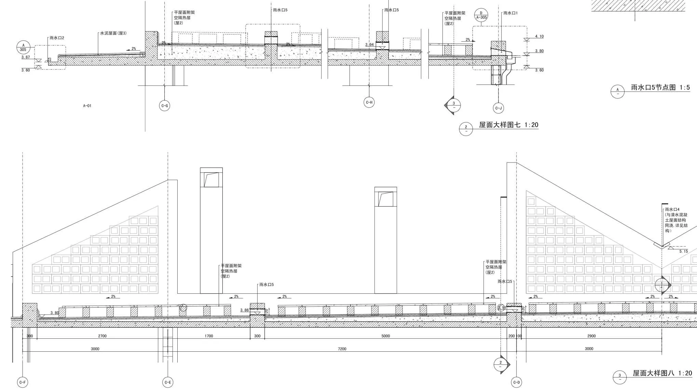
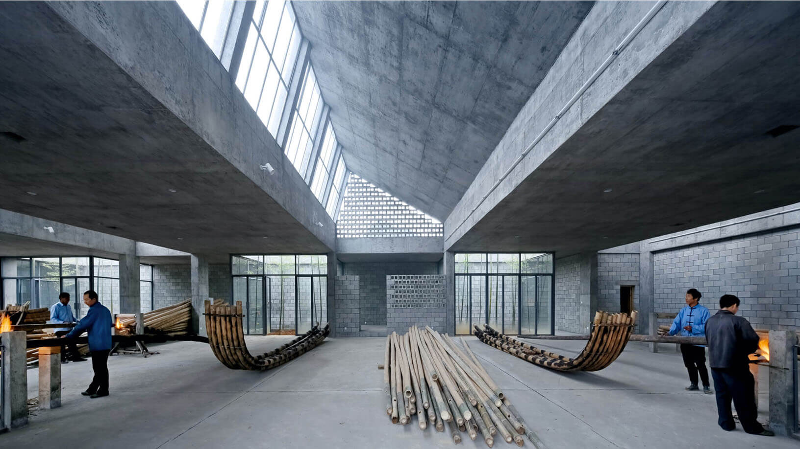

By the time my Korean-American mom tried to teach me Korean, it was too late. Despite my best of efforts, my Korean is still at absolute beginner’s level.
Upon excavating the fossils of them on the wayback machine, I’ve decided that they are too embarrassing to be shown here.
Since architecture was all that I've done since the start of my adult life, it took me too long to realize I wasn’t cut out for it.
This is a short version of what happened. If you get to know me, I’ll give you the long version.
My stance is that a designer’s responsibility is not just to design, but also to clear the barriers that prevent the designs from seeing the light of day.
I always have a lot of fun reflecting upon those parallels — it makes me feel less of an outsider. I'm also not the only one.
Though kind of geeky, through this effort, I’ve met new friends from all over the world who shares a similar background and interest. It was genuinely one of the most invigorating things I’ve done in a while.








Drawings of a roof detail which I was working on, circa 2011.

Completed roof and the space below as a result of said drawings.


Made in Figma + Webflow by Lai Jing Chu, 2025.
Take a peek at the website style guide.